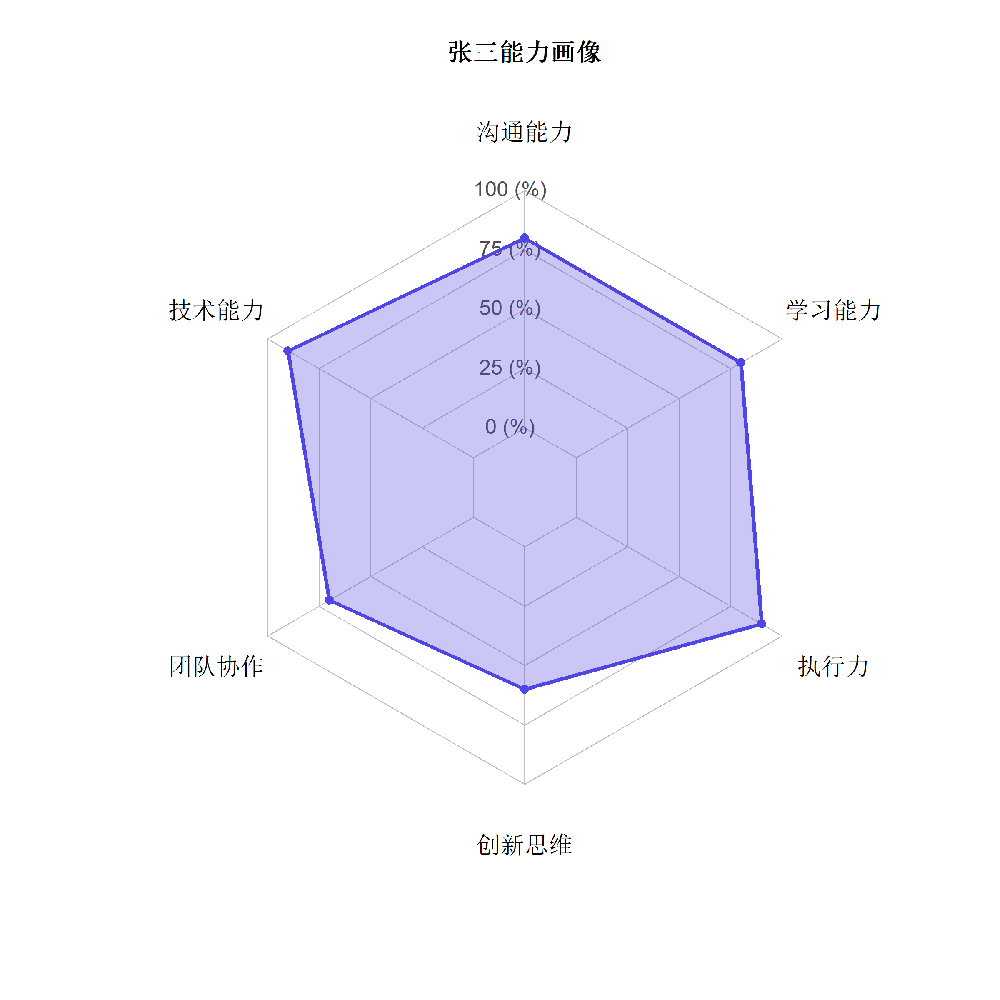
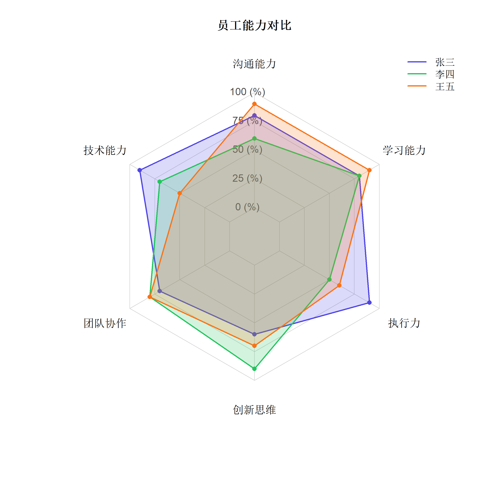
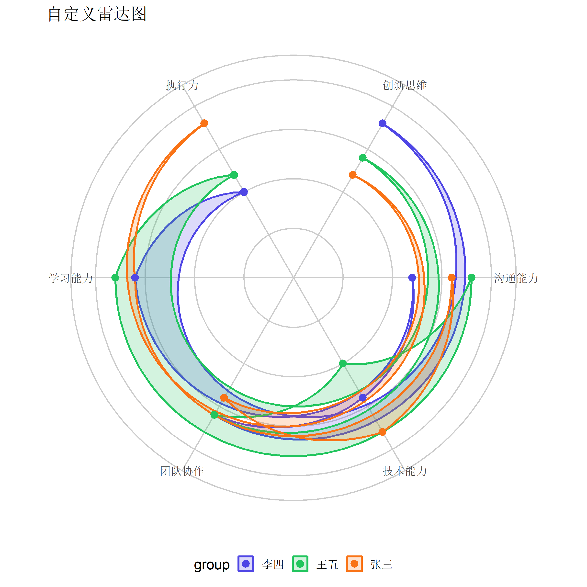

install.packages("fmsb")雷达图 (Radar Chart) 绘制指南
可视化
ggplot2
多维数据
使用 fmsb 和 ggradar 绘制专业雷达图，展示多维指标对比和能力画像。
1. 什么是雷达图？
雷达图 (Radar Chart)，又称蜘蛛图 (Spider Chart) 或星形图 (Star Plot)，是一种用于展示多维数据的可视化方法。它将多个变量的值绑制在从中心向外辐射的轴上，形成一个多边形区域。
适用场景
| 场景 | 示例 |
|---|---|
| 能力评估 | 员工技能画像、学生综合素质 |
| 产品对比 | 手机性能对比、护肤品成分分析 |
| 问卷分析 | 满意度多维评分、服务质量评估 |
| 运动数据 | 球员能力六边形、健身指标追踪 |
[!NOTE] 雷达图最适合展示 5-10 个维度的数据。维度过多会使图形杂乱，过少则不如柱状图直观。
2. 方法一：fmsb 包（基础 R）
fmsb 包提供了最经典的雷达图绑制函数，语法简洁但自定义能力有限。
安装与加载
library(fmsb)数据准备
fmsb::radarchart() 要求数据格式特殊：前两行必须是最大值和最小值。
# 创建示例数据：三名员工的能力评分 (1-10)
data <- data.frame(
沟通能力 = c(10, 0, 8, 6, 9),
技术能力 = c(10, 0, 9, 7, 5),
团队协作 = c(10, 0, 7, 8, 8),
创新思维 = c(10, 0, 6, 9, 7),
执行力 = c(10, 0, 9, 5, 6),
学习能力 = c(10, 0, 8, 8, 9)
)
rownames(data) <- c("Max", "Min", "张三", "李四", "王五")
# 查看数据结构
data 沟通能力 技术能力 团队协作 创新思维 执行力 学习能力
Max 10 10 10 10 10 10
Min 0 0 0 0 0 0
张三 8 9 7 6 9 8
李四 6 7 8 9 5 8
王五 9 5 8 7 6 9绑制单人雷达图
# 绑制张三的能力画像
radarchart(
data[c(1, 2, 3), ], # Max, Min, 张三
axistype = 1, # 显示数值轴
pcol = "#4f46e5", # 线条颜色
pfcol = rgb(0.31, 0.27, 0.9, 0.3), # 填充颜色（带透明度）
plwd = 3, # 线条宽度
cglcol = "grey", # 网格线颜色
cglty = 1, # 网格线类型
cglwd = 0.8, # 网格线宽度
axislabcol = "grey30", # 轴标签颜色
vlcex = 1.2, # 变量标签大小
title = "张三能力画像"
)
绑制多人对比雷达图
# 定义颜色
colors <- c("#4f46e5", "#22c55e", "#f97316")
fills <- c(
rgb(0.31, 0.27, 0.9, 0.2),
rgb(0.13, 0.77, 0.37, 0.2),
rgb(0.98, 0.45, 0.09, 0.2)
)
# 绑制三人对比
radarchart(
data,
axistype = 1,
pcol = colors,
pfcol = fills,
plwd = 2,
plty = 1,
cglcol = "grey80",
cglty = 1,
cglwd = 0.8,
axislabcol = "grey30",
vlcex = 1.1,
title = "员工能力对比"
)
# 添加图例
legend(
"topright",
legend = c("张三", "李四", "王五"),
col = colors,
lwd = 2,
bty = "n"
)
3. 方法二：ggradar 包（ggplot2 风格）
ggradar 包将雷达图整合到 ggplot2 生态系统中，更容易自定义和美化。
安装
# 从 GitHub 安装
devtools::install_github("ricardo-bion/ggradar")library(ggradar)
library(dplyr)
library(scales)数据准备
ggradar 要求数据为 0-1 区间，第一列为分组变量。
# 准备数据（数值标准化到 0-1）
radar_data <- data.frame(
group = c("张三", "李四", "王五"),
沟通能力 = c(0.8, 0.6, 0.9),
技术能力 = c(0.9, 0.7, 0.5),
团队协作 = c(0.7, 0.8, 0.8),
创新思维 = c(0.6, 0.9, 0.7),
执行力 = c(0.9, 0.5, 0.6),
学习能力 = c(0.8, 0.8, 0.9)
)
radar_data绑制 ggradar 图
ggradar(
radar_data,
font.radar = "sans",
grid.min = 0,
grid.mid = 0.5,
grid.max = 1,
grid.label.size = 4,
axis.label.size = 4,
group.line.width = 1,
group.point.size = 3,
group.colours = c("#4f46e5", "#22c55e", "#f97316"),
background.circle.colour = "white",
gridline.mid.colour = "grey70",
legend.position = "bottom",
legend.text.size = 12,
plot.title = "员工能力雷达图"
) +
theme(
plot.title = element_text(hjust = 0.5, size = 16, face = "bold"),
legend.title = element_blank()
)4. 方法三：ggplot2 手动实现
如果需要更高的定制自由度，可以使用 coord_polar() 手动绑制。
library(ggplot2)
library(tidyr)
library(dplyr)
# 准备数据（数值标准化到 0-1）
radar_data <- data.frame(
group = c("张三", "李四", "王五"),
沟通能力 = c(0.8, 0.6, 0.9),
技术能力 = c(0.9, 0.7, 0.5),
团队协作 = c(0.7, 0.8, 0.8),
创新思维 = c(0.6, 0.9, 0.7),
执行力 = c(0.9, 0.5, 0.6),
学习能力 = c(0.8, 0.8, 0.9)
)
# 数据转换为长格式
radar_long <- radar_data %>%
pivot_longer(cols = -group, names_to = "variable", values_to = "value")
# 创建雷达图
ggplot(radar_long, aes(x = variable, y = value, group = group, color = group, fill = group)) +
geom_polygon(alpha = 0.2, linewidth = 1) +
geom_point(size = 3) +
coord_polar() +
scale_y_continuous(limits = c(0, 1)) +
scale_color_manual(values = c("#4f46e5", "#22c55e", "#f97316")) +
scale_fill_manual(values = c("#4f46e5", "#22c55e", "#f97316")) +
labs(title = "自定义雷达图", x = NULL, y = NULL) +
theme_minimal(base_size = 14) +
theme(
axis.text.y = element_blank(),
axis.ticks.y = element_blank(),
panel.grid.major = element_line(color = "grey80"),
legend.position = "bottom"
)
5. 实战案例：产品对比
# 手机性能对比数据
phones <- data.frame(
产品 = c("iPhone 15 Pro", "Galaxy S24", "Pixel 8"),
性能 = c(0.95, 0.90, 0.85),
续航 = c(0.80, 0.85, 0.90),
拍照 = c(0.92, 0.88, 0.95),
屏幕 = c(0.90, 0.95, 0.85),
性价比 = c(0.60, 0.75, 0.85)
)
ggradar(
phones,
grid.min = 0,
grid.mid = 0.5,
grid.max = 1,
group.colours = c("#1d4ed8", "#16a34a", "#ea580c"),
legend.position = "bottom"
) +
labs(title = "2024 旗舰手机对比") +
theme(plot.title = element_text(hjust = 0.5, face = "bold"))6. 注意事项
[!WARNING] 雷达图的局限性： 1. 不适合变量之间存在很大数量级差异的情况 2. 人眼难以准确比较面积大小 3. 变量顺序会影响图形形状和视觉印象
最佳实践
| ✅ 推荐 | ❌ 避免 |
|---|---|
| 5-8 个变量 | 超过 12 个变量 |
| 标准化到统一量程 | 混用不同单位 |
| 有意义的变量排序 | 随机排列 |
| 2-4 组对比 | 超过 5 组叠加 |
参考文献
- Wickham, H. (2016). ggplot2: Elegant Graphics for Data Analysis. Springer.
- Nakazawa, M. (2023). fmsb: Functions for Medical Statistics Book with some Demographic Data. R package.